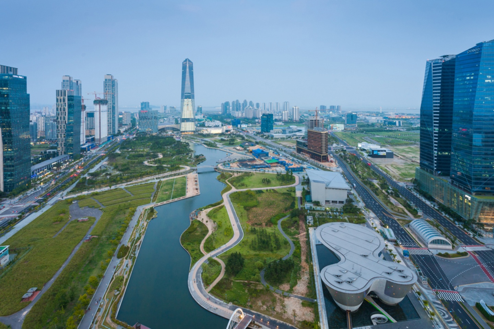

In this section, we'll look at how we can expand cities in a more sustainable way. We'll explore alternatives to the infamous urban sprawl and look at ways to help existing urban sprawl communities become more sustainable. Read more about sustainable development.
In this section, we'll look at how we can move people around different communities with different needs. We'll explore the war on the car, and how drivers, transit, cyclists and pedestrians can co-exist. Finally, we'll look at an example of an excellent public transportation network and examine why it's so successful. Read more about sustainable transportation.
In this section, we'll look at how we use energy and why we need it. Then, we'll explore why Canadian energy is some of the best in the world and ways for us to take advantage of it. Despite this, we still need to begin moving towards cleaner energy - and we'll look at how cities around the world are doing that and see what we can learn from them. Read more about sustainable energy.
In this section, we'll look at other ways to build sustainable cities. We'll explain why we need to bridge the gap between urban and rural communities, and how we can bring farms into cities. Then, we'll look at how we can build cities that are resistant to climate change and have smaller ecological footprints. Finally, we'll end off by looking at an example of a sustainable city that exemplifies everything we've discussed on this webpage. Read more about other ways to build sustainable cities.
| Ranking | City Name | Country |
|---|---|---|
| 1 | Oslo | Norway |
| 2 | Stockholm | Sweden |
| 3 | Amsterdam | Netherlands |
| 4 | Frankfurt | Germany |
| 5 | Vancouver | Canada |
______________________________________________________________________________________
*For a brief overview of why we need sustainable cities, visit The UN Sustainable Development Goals: Goal #11
Return to the top of the page.